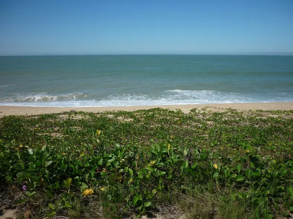
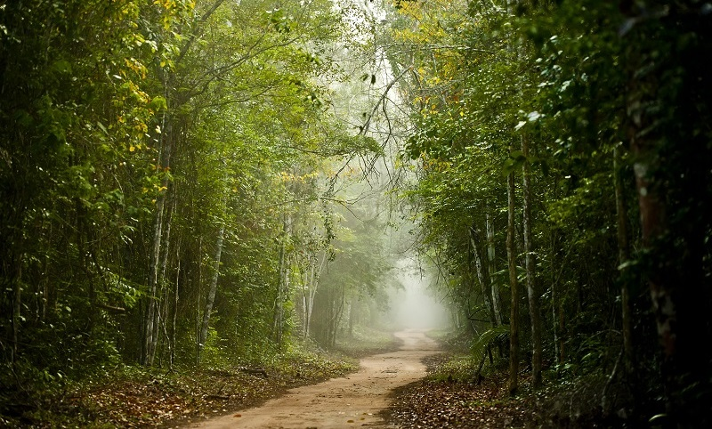
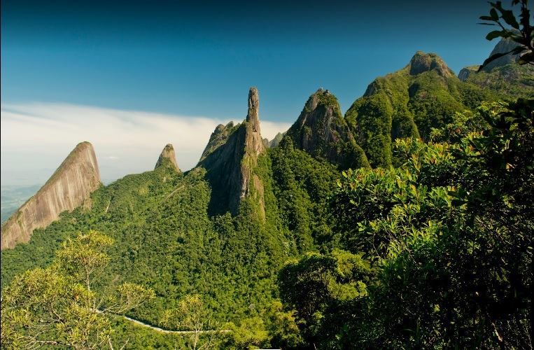
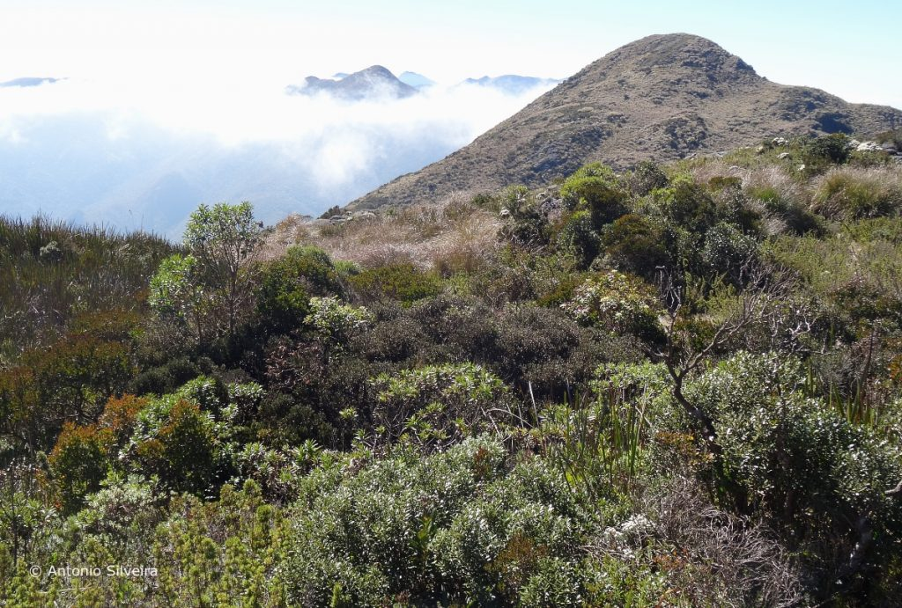
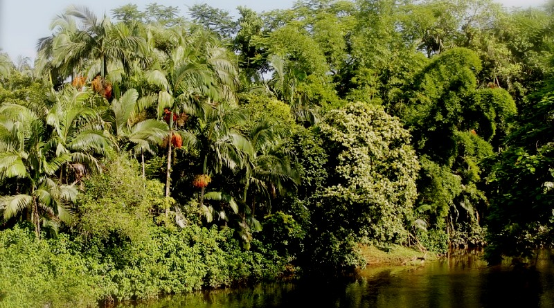
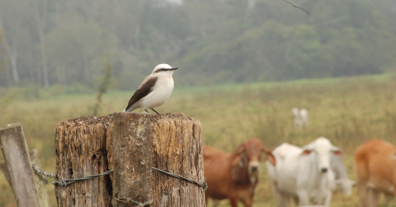
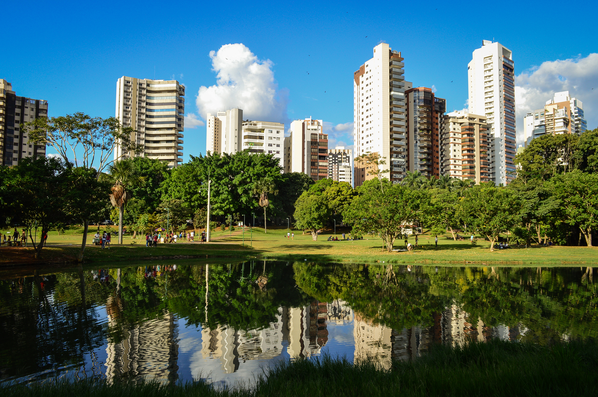

Roteiros de Observação de Aves
Esta página mostra os principais ambientes e dicas para observar aves no Sudeste, desde parques urbanos até áreas de mata mais preservada. A ideia é ajudar você a planejar saídas seguras, agradáveis e produtivas, sempre com respeito à natureza.
Manguezal

O manguezal cresce em lodaçais costeiros, na foz de rios e em baías. Aqui, muitas espécies animais marinhas, inclusive peixes, moluscos e crustáceos de valor comercial, passam o início da vida nas águas protegidas e ricas em nutrientes, antes de ir para mar aberto.
Ambiente valioso
Estima-se que um único hectare de manguezal rende, por ano, cerca de 3/4 de tonelada de peixe e camarão para a pesca. O tremendo valor disso para as comunidades locais é ignorado cada vez que os manguezais são destruídos para dar lugar a loteamentos, portos e ocupações ilegais.
Os manguezais que restam são lugares fascinantes para visitar, com canais sinuosos que percorrem densos maciços vegetais, onde caranguejos vermelhos escalam as raízes cobertas de ostras, expostas pela maré baixa. Aí é possível avistar o socó-do-mangue e garças-brancas alimentando-se na lama, a garça-azul nas árvores de mangue. A águia-pescadora pode ser vista mergulhando atrás de peixes. Certas aves, como a figuinha-do-mangue, vivem apenas nesse ambiente.
Restinga
Nas planícies arenosas da costa cresce uma vegetação intrigante, variada, chamada (como a planície em si) restinga. Ela surge como plantas rasteiras e esparsas ao longo da praia, e longe do mar vai se tornando uma massa arbustiva densa. Está dá lugar a uma mata pitoresca de árvores tortas, às vezes rica em coloridas bromélias terrestres. Por fim, surge uma mata alta e exuberante.
Paisagem variada
No estado de São Paulo, a mata de restinga é bem úmida, muitas vezes alagada, a ramaria carregada com rica variedade de epífitas (plantas que usam outras como suporte). No estado do Rio de Janeiro, grandes lagoas costeiras são rodeadas por uma paisagem árida cheia de cactos. Na Bahia, arvoretas e moitas formam capões em meio a um tapete ralo de ervas.
Somente na restinga
O ameaçado formigueiro-do-litoral habita uma região restrita da costa fluminense, em boa parte protegida pelo Parque Estadual Costa do Sol. Uma pequena população do formigueiro-de-cabeça-preta, antes tido como extinto, foi descoberta em Angra dos Reis, em 1987. Tipos diferentes de restinga abrigam diferentes faunas de aves.
As restingas enfrentam graves pressões pela urbanização costeira. Cada trecho de restinga é um miniecossistema quase único. Em cada ponto onde esta paisagem complexa é destruída, uma biodiversidade única é perdida.
Matas de Baixada
Florestas luxuriantes crescem nas baixadas costeiras quentes e úmidas ao longo do Atlântico no sudeste do país. Antes, árvores imensas de 40 metros de altura, adornadas com epífitas e cipós, dominavam tais planícies. Hoje, esses gigantes persistem em poucos lugares, mas as matas de baixada ainda abrigam extraordinária riqueza de vida. Poucos ambientes no mundo têm tantas espécies exclusivas.
Já muito devastada, a mata de baixada (abaixo de 500 metros de altitude) continua enfrentando enorme pressão devido à pecuária, ao plantio de bananais e à expansão urbana, entre outras ameaças. Para fazer frente a essa situação, os donos de terras podem criar corredores ecológicos entre os fragmentos que restam, mantendo viável sua vibrante teia de vida.
Especialidades
Não só o conjunto de espécies de aves de baixada é distinto do que vive a maiores altitudes, como varia ao longo da costa. Na porção sul da região, a ruidosa gralha-azul percorre o dossel e o gavião-pombo-pequeno circula acima da mata do Vale do Ribeira e Jureia. Mais ao norte, a notável diversidade de Ubatuba inclui o apuim-de-costas-pretas e o anambézinho. E indo ainda mais para o norte, na Bahia e no Espírito Santo há raridades de ocorrência altamente localizada, como o mutum-do-sudeste, o anambé-de-asa-branca e o balança-rabo-canela.
Matas Serranas
Serras, mata e paisagens
Das porções altas das serras costeiras do Sudeste avista-se um panorama deslumbrante, com verdes encostas e vales florestados, dependendo da época tingidos pelo rosa, lilás ou amarelo das florações, às vezes com um vislumbre do mar azul lá embaixo. Subindo rumo aos cimos, passa-se por zonas com diferentes conjuntos de aves, que num dia bom de passarinhar rendem cem espécies ou mais.
Mata de encosta
A exuberante mata presente entre 500 e 1.500 metros de altitude, rica em palmeiras, taquaras, orquídeas e bromélias, está condicionada à elevada umidade. A variedade de aves que a habitam é imensa — só de papa-formigas existem ao menos 38 espécies, por exemplo. As taquaras, quando frutificam, atraem nômades como o pixoxó, a cigarra-bambu e a sempre rara pomba pararu, especializadas em comer suas sementes.
Mata de altitude
Subindo mais pelas vertentes íngremes expostas aos ventos vindos do mar, acima de 1.500 metros chega-se à mata de neblina, com árvores baixas e esgalhadas, carregadas de liquens e musgos repletos de umidade. Nessas altitudes elevadas, o assobio delicado da saudade soa, quase sobrenatural, por entre a cerração. Outras aves típicas são o corocoxó, a choquinha-da-serra, o peito-pinhão e o quete.
Mata de Araucária

Árvores elegantes
A grande altitude, nas serras mais elevadas do sul de Minas ao sul de São Paulo, cresce um tipo particular de mata, dominada pela silhueta em candelabro da araucária, ou pinheiro-do-paraná. Esta árvore emblemática, de tronco robusto e retilíneo que emerge do dossel e folhas miúdas e afiladas, foi derrubada sem trégua durante o século XX para o uso de sua excelente madeira como material de construção, e encontra-se hoje em perigo de extinção.
A floresta mágica
O interior sombrio e úmido da mata de araucária transmite uma sensação etérea, quase irreal, com os galhos contorcidos do pinhão-bravo cobertos por densos jardins de liquens e musgos mesclados a samambaias, orquídeas e bromélias.
Pinhão
A semente da araucária é importante como alimento para papagaios e tiribas, além de ouriços-cacheiros, cutias e serelepes. Cozido, o pinhão é um prato apreciado nas festas juninas; no entanto, sua coleta excessiva pode pôr em risco todo esse ambiente tão vulnerável.
Aves especiais
O grimpeiro só existe na mata de araucária. Outras espécies presentes incluem o gavião-pombo-grande e o gavião-de-sobre-branco, a coruja-listrada, o papagaio-de-peito-roxo, o tucano-de-bico-verde, o caneleirinho-de-chapéu e o pula-pula-assobiador.
Campos de Altitude
Os cumes mais elevados das serras costeiras e interiores são lugares especiais, de paisagens amplas e belas formações rochosas, cobertos por vegetação rasteira e moitas. Muitas espécies de plantas e várias aves são exclusivas de tais ambientes.
Os campos de altitude afloram nos topos mais altos das serras do Mar e da Mantiqueira, acima das matas de altitude. Aí, o tricolino-de-dorso-cinza, as marias-pretas-de-topete e de-garganta-vermelha pousam em arbustos. Casais de garrinchas-choronas se esgueiram pela macega. Machos de beija-flor-de-topete-verde reúnem-se e cantam em touceiras de taquarinha. O caminheiro-foguetinho canta durante voos de exibição.
Jardins de rochas
Nos mais altos platôs e picos da serra do Espinhaço (que vai do centro de Minas Gerais à Bahia) descontinuam-se os campos rupestres, ambiente rochoso exclusivo do Brasil, rico em plantas e animais endêmicos e de beleza extraordinária. Restritos a este ambiente são o espetacular beija-flor-de-gravata-verde, o lenheiro-do-cipó e o rabo-mole.
Tais ambientes de grandes altitudes, sensíveis e com vegetação incomum, são muito vulneráveis a danos por fogo, pisoteio de turistas que saem de trilhas, tráfego de veículos e pastejo por mulas. Seja cuidadoso ao visitar esses locais belos e frágeis.
Matas de Planalto

Mata Atlântica do interior
Por trás das serras costeiras do Sudeste estende-se uma vasta área elevada, o planalto. Aqui, as matas são semidecíduas, perdendo parte das folhas durante a estação mais seca.
No passado, as matas de planalto, mescladas aos cerrados, cobriam o interior paulista e o leste de Minas Gerais. Hoje, monoculturas como cana-de-açúcar, soja, eucalipto e pinus, além de fazendas de gado, ocupam praticamente toda a área, e talvez nada reste das florestas primárias. A mata interiorana persiste em fragmentos isolados, já alterados, como a serra da Cantareira, que sobrevive encostada à imensa metrópole de São Paulo.
Endemismos
Entre as aves que habitam as matas de planalto há algumas espécies exclusivas, como, por exemplo, o cuitelão e o uirapuru-laranja. Fragmentos florestais maiores abrigam, ainda, a jacutinga, a arara-vermelha-grande, a juruva, a borralhara-de-tote e o chororó-cinzento.
Mitigando o isolamento
Preservar as manchas de matas de planalto que restam é vital, mas não é suficiente para proteger espécies mais sensíveis. Criando corredores ecológicos que conectem entre si os fragmentos, é possível aumentar a chance de sobrevivência de muitas espécies que aí vivem.
Cerrado

A savana encontra a mata
Não há um limite exato entre os dois grandes biomas da Região Sudeste, o Cerrado e a Mata Atlântica. Ambos se entremeiam em um mosaico irregular, as paisagens de Cerrado (campos, cerrado típico, cerradão) mesclando-se às matas de planalto e crescendo em solos mais ácidos, onde plantas da Mata Atlântica não prosperam. Essa interpenetração traz para dentro do domínio da Mata Atlântica aves típicas do Brasil Central, como a ema, o maxalalagá, a arara-canindé, o galito, o tricolino-canela, o papa-mosca-do-campo, a bandoleta e a cigarra-do-campo, que habitam as manchas de cerrado da região.
Desaparecendo
Assim como no Brasil Central, os cerrados estão sob ameaça crítica no Sudeste; em São Paulo, sua localização coincide com as áreas de cultivo intensivo de cana-de-açúcar e cítricos. Com a conversão do cerrado em área agrícola, suas espécies típicas são perdidas. A codorna-mineira e o andarilho, de ocorrência principal no Brasil Central, não são vistos no extremo leste de sua distribuição, em São Paulo, desde a década de 1980. Outras espécies escassearam muito.
Os cerrados da região precisam de proteção. Seria uma triste ironia se o uso de etanol de cana como combustível menos poluente, menos daninho ao ambiente, levasse à destruição dos cerrados do Sudeste e da preciosa vida que sustentam.
Capoeiras
Quando uma área desmatada permanece algum tempo sem uso, as sementes dormentes no solo, ou trazidas por animais e pelo vento, germinam e crescem. Surge assim a capoeira, uma mata jovem de árvores finas que crescem rápido, sempre ávidas por luz. À sua sombra, árvores maiores, de crescimento lento, desenvolvem-se até dominar o dossel e formar-se uma mata secundária mais madura, o capoeirão. A mata secundária nunca é idêntica à original, mas é bem parecida, e abriga grande variedade de espécies. De fato, boa parte das belas matas protegidas em parques e reservas do Sudeste talvez sejam secundárias, algumas com séculos de idade.
Valiosas para as aves
Em áreas agropecuárias, muitas espécies dependem das capoeiras. A juriti-gemedeira, a alma-de-gato, o pica-pauzinho-carijó e o chupadente, além do estalador, colonizam tais matas juvenis, onde podem viver e procriar.
Reflorestamento eficiente
A regeneração é um processo natural, que pode ser acelerado com o plantio de árvores nativas que existem em áreas vizinhas, criando um ambiente mais variado e revitalizado. Com o tempo, a mata retorna vigorosa, abrigando dezenas de espécies de aves e de outras formas de vida.
Áreas Rurais
Fazendas e sítios tradicionais do Sudeste do Brasil são lugares excelentes para o observador de aves iniciante, pela variedade de ambientes que aí existe: pastos, lavouras, pomares, jardins, brejos, capoeiras e matas. Essa paisagem heterogênea abriga dúzias de espécies de aves cujos hábitos flexíveis lhes permitem viver perto das pessoas.
Algumas aves de áreas rurais são generalistas e vivem em quase qualquer ambiente não florestado, seja natural ou criado pela mão humana: coruja-buraqueira, quero-quero, anu-branco, joão-de-barro e siriri. Outras originalmente habitavam borda de mata, por exemplo o gavião-carijó, o tuim, o bem-te-vi, o relógio e os sabiás poca, laranjeira e barranco. Outras, ainda, como andorinha, graúna, gralha-do-campo e arapaçu-do-cerrado, encontram aí paisagens que de certo modo lembram seus ambientes originais de cerrado, hoje tão raros.
Diversidade rentável
Propriedades diversificadas, com plantios, pastos e vegetação nativa, favorecem aves e pessoas. São ambientes mais saudáveis do que monoculturas extensas, que extirpam matas ciliares e criam desertos verdes pelo uso excessivo de agrotóxicos. Um uso variado preserva serviços ambientais como a polinização, que favorece a produção de frutos e legumes, e também de mel, e permite até a atividade turística.
Cidades
Aves urbanas
As aves são abundantes nas cidades brasileiras, em parques, jardins, ruas arborizadas, cruzando os céus. Não por acaso estão surgindo clubes de observadores em tantas cidades. Um número surpreendente de espécies vive entre as árvores e nos gramados de qualquer parque. Um observador atento pode encontrar cem ou mais espécies, até em áreas residenciais.
Algumas aves vivem bem em cidades
O bem-te-vi, por exemplo, come quase de tudo, incluindo restos de comida humana, e seu grito inconfundível — “bem-ti-vi!” — ressoa por toda a cidade. Sabiá-laranjeira, sanhaço-cinzento, cambacica e beija-flor-tesoura logo aparecem quando um comedouro ou bebedouro de beija-flor é posto numa varanda ou jardim, junto à vegetação.
Mais plantas nativas
Lembre-se de que as aves são parte de uma complexa teia de vida, que inclui plantas, insetos e demais seres vivos. Uma vegetação urbana rica em árvores e outras plantas nativas da região permite que mais e mais aves da Mata Atlântica se instalem e convivam conosco no ambiente urbano.
O morador urbano precisa de natureza
A natureza é tão necessária para as pessoas quanto para as aves. Uma paisagem árida de concreto, com ar e água poluídos, afeta a saúde física e mental, a qualidade de vida e o bem-estar espiritual de todos nós.
Dicas e como organizar roteiro em cada ambiente
Parques Urbanos
Parques urbanos são excelentes pontos de partida para quem não tem muito tempo disponível. Muitas espécies se adaptam bem às cidades e utilizam árvores de rua, praças e jardins como locais de alimentação e descanso.
Procure áreas com:
- árvores de diferentes alturas;
- gramados ou lagos artificiais;
- canteiros com flores e arbustos frutíferos;
- horários mais tranquilos, com pouco movimento de pessoas.
Trilhas em matas e unidades de conservação
Trilhas em fragmentos de mata, parques estaduais e reservas particulares costumam oferecer encontros com espécies mais sensíveis, que não aparecem com frequência nos centros urbanos.
Ao planejar roteiros nesse tipo de ambiente:
- Verifique regras de visitação e horários de funcionamento;
- Leve água, lanche leve e capa de chuva ou agasalho;
- Avise alguém sobre o local e o horário previstos para retorno.
Ambientes rurais e áreas abertas
Estradas rurais, pastagens com árvores isoladas, plantações e represas são ótimos locais para observar aves campestres.
Nessas áreas, dê atenção especial:
- A fios de energia, mourões de cerca e postes, usados como poleiros;
- A campos com flores silvestres, que atraem insetos e, consequentemente, aves insetívoras;
- A corpos d’água, onde podem aparecer marrecos, biguás e outras aves aquáticas.
Como planejar seu próprio roteiro
Não existe apenas um roteiro “certo”. Você pode combiná-los de acordo com seu tempo e interesse. Um passo a passo simples para montar sua saída:
- Escolha um tipo de ambiente (parque, trilha, litoral, área rural).
- Verifique previsão do tempo e horário de nascer do sol.
- Separe binóculo, guia de campo, água, protetor solar e repelente.
- Defina um percurso que permita observar com calma.
- Registre suas observações em um caderno,aplicativo ou fotos.
Cuidados de segurança e respeito à natureza
Em qualquer tipo de roteiro, alguns cuidados são essenciais:
- Permaneça sempre em trilhas ou caminhos já abertos;
- Não alimente animais silvestres;
- Evite usar playback em excesso, para não estressar as aves;
- Leve todo o lixo de volta com você;
- Respeite propriedades privadas e placas de acesso restrito.
Assim, suas saídas de observação serão agradáveis para você e pouco impactantes para as aves e o ambiente.